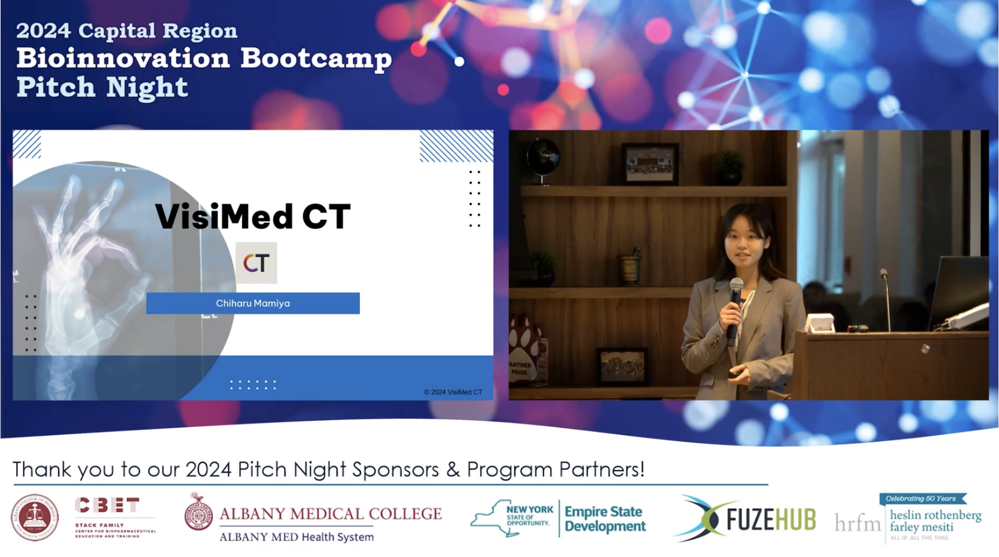

VisiMed CT – Bioinnovation Bootcamp

Project Summary
VisiMed CT is an educational platform designed to empower medical students and professionals through interactive imaging tools, AI-powered grayscale image colorization, and expert-led content. Pitched at the 2024 Capital Region Bioinnovation Bootcamp, VisiMed CT addresses the gap between textbook theory and hands-on diagnostic experience.
- Innovative Features: Real-time CT image colorization, export to flashcards, interactive quizzes, and department-specific voice commentary.
- Professional Guidance: Content and audio commentary by practicing clinicians and educators, tailored for different specialties.
- Integrated Learning: Combines case studies, image labeling, and adaptive quizzes to accelerate learning and improve communication skills.
Market & Impact
- Market Opportunity: Targets the rapidly growing healthcare education market ($300B by 2030) and radiology software segment ($12.7B by 2030).
- Primary Users: Large hospitals, clinics, medical and radiology schools, and individual medical students.
- Business Model: Offers flexible subscriptions for individuals and institutions, as well as software packages and optional training support.
- Strategic Partnerships: Collaborates with hospitals, medical schools, and technology providers to expand reach and impact.
Timeline & Team
- 2024: Resource gathering, model selection, AI algorithm development, MVP prototype, user testing, and pitch night finalist.
- Team: Founder (Engineering), Academic Lead (General Surgery), Technical Lead (AI/ML), Business Lead (Entrepreneurship).
Learnings & Takeaways
- Gained first-hand insight into the medical entrepreneurship process, including pitching, team-building, and rapid prototyping.
- Learned to prioritize user feedback from clinicians and students, which led to new features like audio commentary and flashcards.
- Developed skills in competitive analysis, business modeling, and customer voice discovery.
- Discovered the importance of networking, mentorship, and cross-disciplinary collaboration.
- Experienced the challenges of balancing technical feasibility, user needs, and business viability in a real-world startup setting.
Related News & Resources